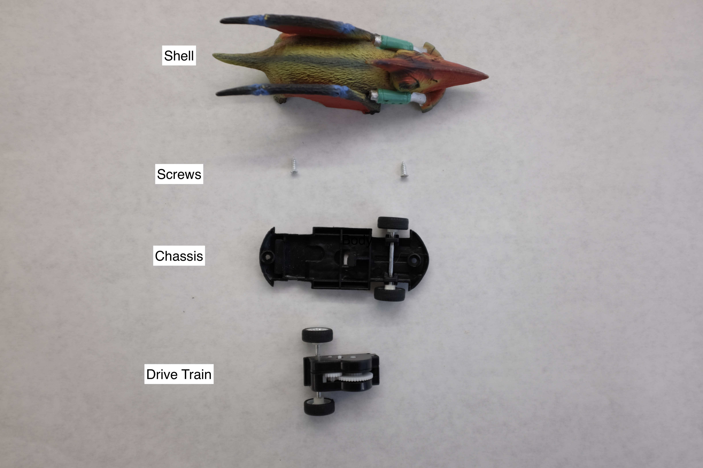
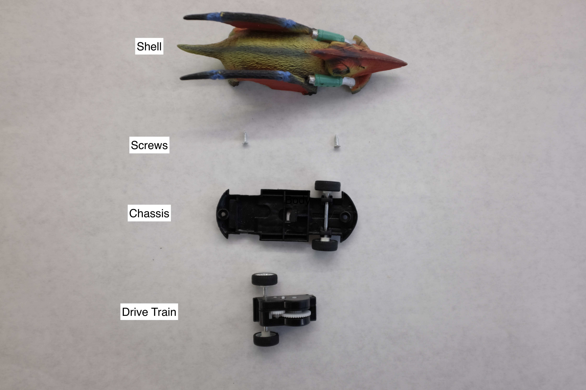

Velocicar Toy Analysis


 

I think velocicar has a spiral spring attached to his back wheels through the shaft that connects them both. On the other end of the spiral is attached a ratchet system which allows it to move freely in the counterclockwise rotation that drives the car forward and prevents its movement in the clockwise reverse. When the wheels are spun clockwise, as when velocicar is dragged backwards and charged up, the ratchet locks into place and the spring is turned tighter and tighter. On release, the spring lets go of its energy by spinning the wheels and sending velocicar into forward.
After taking it apart, I learned this $2.5 toy is way more complex than I imagined! The drive train is assembled as a unit, riveted shut with small plastic pieces, and snapped into place in the injection molded chassis with one end lipped under a ridge and the other secured on top with a plastic clip. The drive train itself was not employing a ratcheting mechanism, but gear with a degree of freedom which allowed it to slip into a stuck position engaging the rest of the gears when under tension and into a free position when loose! I was also surprised by the number of gears and the way that the ratio varied in each step along the train. At some point, some serious engineering was put into designing this drive module, a case for its repetition across this type of wind up toy.